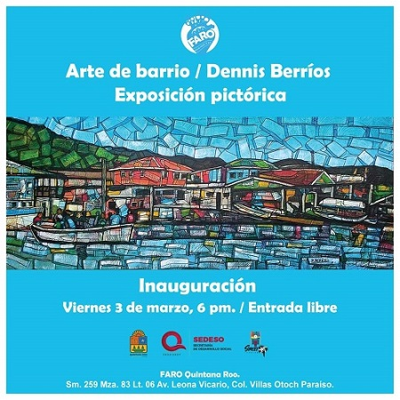
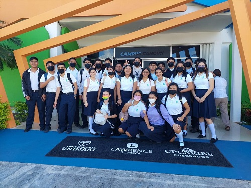
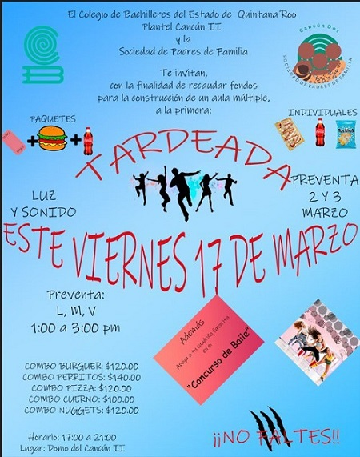
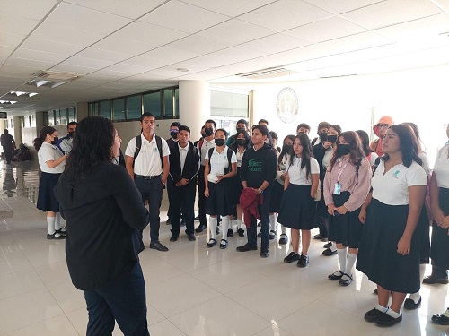

A partir del día Viernes 03 de Marzo del presente año se dará por inaugurada la exposición pictórica "Arte de barrio" Por Dennis Berríos, en el que se expondrá arte barrio en colaboración con el Estado, la Secretaria De Desarrollo Social (SEDESO), la asociación StreetArt y FARO Quintana Roo. Este proyecto se llevará acabo en la sm.259 Mza83 Lt.06 Av.Leona Vicario, Col. Villas Otoch Paraíso. Se te invita y se espera tu asistencia a este evento que tiene la finalidad de compartir y fomentar el arte a los estudiantes y ciudadanos de Cancún.

Recorrido por la Unimaat
Durante el semestre 2023-A se llevarán a cabo recorridos por las instalaciones de la Unimaat a los alumnos del plantel del sexto semestre, para que amplien su visión sobre las carreras que ofrece esta universidad. Los recorridos son impartidos por docentes y alumnos de la Unimaat, quienes comparten sus conocimientos y experiencias a los alumnos. Estos recorridos son fundamentales para la elección de carreras universitarias a los próximos egresados de nuestro colegio.

Tardeada
El día Viernes 17 de Marzo se llevará a cabo una tardeada en en plantel Cancún Dos en el que habrá luz y sonido, un "concurso de baile". Esta tardeada tine la finalidad de recaudar fondos para la construcción de un aula múltiple. Este evento es organizado por El Colegio del Estado de Quintana Roo Plantel Cancún II y la Sociedad de Padres de Familia. El horario será de las 17:00 a las 21:00 horas en el Domo del Plantel Cancún II. la entrada al evento viene acompañado de un combo, de los cuales se encuentran:
Combo Burguer: $120.00
Combo Perritos: $140.00
Combo Pizza: $120.00
Combo Cuerno: $100.00
Combo Nuggets: $120.00

Recorrido por la Universidad Polictécnica de Quintana Roo
Durante el semestre 2023-A se llevarán a cabo recorridos por las instalaciones de la Universidad Politécnia de Quintana Roo a los alumnos del plantel del sexto semestre, para que amplien su visión sobre las carreras que ofrece esta universidad. Los recorridos son impartidos por docentes y alumnos de la universidad, quienes comparten sus conocimientos y experiencias a los alumnos. Estos recorridos son fundamentales para la elección de carreras universitarias a los próximos egresados de nuestro colegio.
